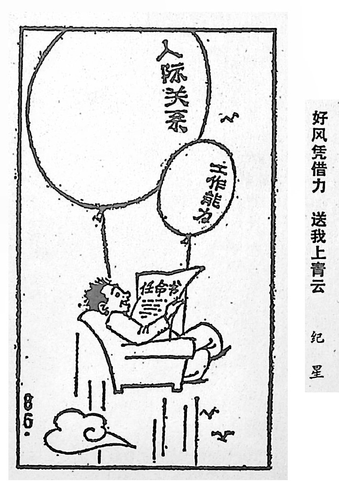

纪星 《人事》1987年第2期（总第17期），封三
好风凭借力 送我上青云
On a Good Wind I Ride to the Blue Clouds
- Text in the drawing
- 人际关系 / 工作能力 / 任命书
Personal connections / Ability at work / Letter of appointment - Description
- A man lounging in an armchair reads his letter of appointment as he floats into the sky, carried by a huge balloon marked “personal connections” and a much smaller one marked “ability at work.”
- Note
- The title quotes Xue Baochai's poem on willow catkins in Dream of the Red Chamber: “A good wind lends me strength / to carry me up to the blue clouds.” 青云 also means high office.
- Artist
- Ji Xing 纪星
- Published in
- 《人事》1987年第2期（总第17期）, inside back cover
- Themes
- Connections (guanxi) · Promotion

Cite
Ji Xing, “好风凭借力 送我上青云” [On a Good Wind I Ride to the Blue Clouds], Renshi (Personnel) 《人事》, 1987, no. 2, inside back cover.